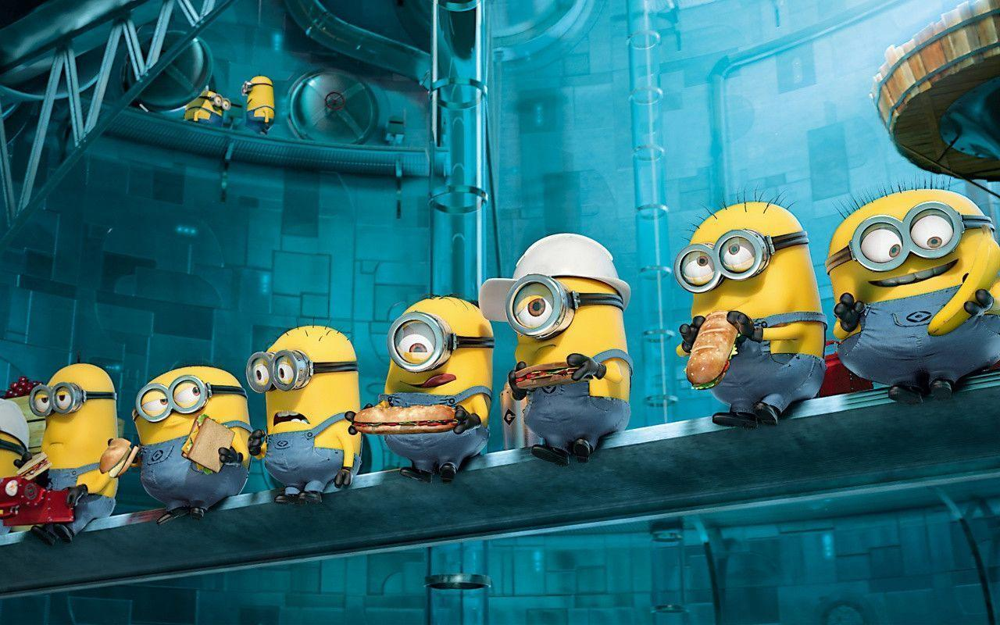
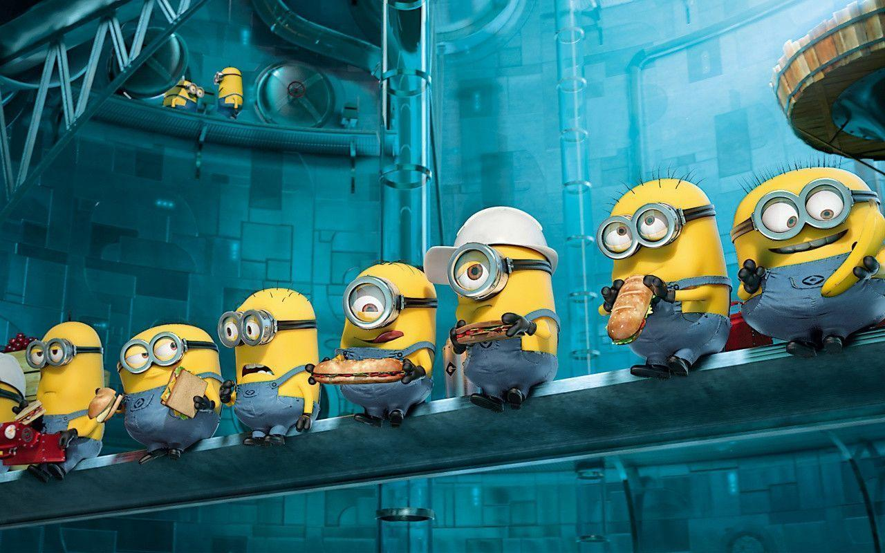

MUSIC
Minions, those endearing and mischievous yellow creatures from the 'Despicable Me' movies, have a unique and infectious love for music. Whether they're spontaneously bursting into song, playing musical instruments in their own quirky way, or simply dancing to a catchy tune, Minions find joy and humor in the world of sound. Their love for music is a testament to their playful and carefree nature, making them even more lovable and entertaining characters in the world of animation.
Read More...
TEASE
Minions, those lovable and yellow mischief-makers, have a knack for playful banter that knows no bounds. Whether they're poking fun at each other's antics, engaging in goofy competitions, or playfully ribbing their master, Gru, their teasing is an integral part of their camaraderie. Even their boss, with all his villainous aspirations, is not immune to their lighthearted jests. These endearing creatures infuse humor into every situation with their witty quips and spirited antics, proving that laughter truly knows no hierarchy in the world of the Minions.
Read More...
LOYALTY
Among the endearing qualities of Minions, their loyalty, courage, and mutual support stand out prominently. These little yellow creatures, despite their mischievous tendencies, are fiercely loyal to their leader, Gru, and to each other. When faced with adversity, they transform into resilient fighters, fearlessly tackling any obstacle that comes their way. Their camaraderie is heartwarming, and their willingness to stand by one another, no matter the circumstances, is a testament to the strength of their bond. In their world of mayhem and mischief, the Minions exemplify the true meaning of loyalty, bravery, and unwavering support, making them not only hilarious but also incredibly endearing.
Read More...
LANG.
The Minions, those lovable, banana-obsessed, and mischievous creatures from the "Despicable Me" film franchise, are known for their hilarious and endearing form of communication known as Minionese. This peculiar language is a delightful blend of gibberish, nonsensical babbling, and borrowed words from various languages. It's a whimsical concoction of sounds, expressions, and gestures that defy formal grammar and structure. Minionese is a testament to the creators' creativity, adding a unique and comical dimension to the Minions' already entertaining personalities. What makes Minionese truly remarkable is its ability to convey emotion and meaning through tone and context, even without comprehensible words. Minions can express joy, confusion, fear, and excitement using this playful language, making it universally understood by audiences worldwide. The Minions' infectious laughter and camaraderie shine through in their interactions, and Minionese plays a significant role in establishing their endearing appeal. It's safe to say that Minionese is not just gibberish; it's the heart and soul of these beloved animated icons, adding an extra layer of charm to their already unforgettable presence in the world of entertainment.
Read More...


.gif)
.gif)
.gif)
.gif)

 
